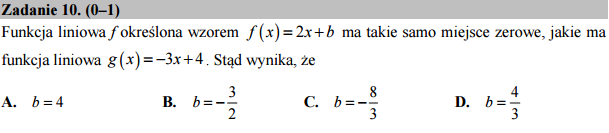

O konstrukcji złożonych poleceń z pomocą metod¶
{kind=link}
Korzystając z algebry komputerowej możemy praktycznie w jednej linijce otrzymać wynik:
Co oznacza wyrażenie f.subs(solve(g,x)[0]).solve(b)[0].show()?
W bezpośrednim przekładzie z Pythona na Polski:
Podstaw do wyrażenia
fpierwsze rozwiązanie równania \(g(x)=0\), rozwiąż ze względu na \(b\) i pokaż ładnie na ekranie pierwsze rozwiązanie.
Informacja
Warto zauważyć, że dla Sage solve(g,x) to jest to samo co
solve(g==0,x) oznacza: rozwiąż \(g(x)=0\). Wynikiem
rozwiązywania jest zawsze lista, może być pusta jeśli nie ma
rozwiązań lub jednoelementowa.
Jak to działa? - metody i funkcje.
Językiem systemu algebry komputerowej Sage jest Python. W Python-ie
wszystkie zmienne są objektami i posiadają, prócz danych takich jak
np. wartość zmiennej, tak zwane metody. Metodami są funkcje, które
wywołujemy taką składnią: nazwa_objektu.funkcja().
Wypróbuj sam działanie metod. Weż na przykład wyrażenie algebraiczne Sage, które jest bardzo złożonym objektem i posiada np. rozmaite metody do manipulacji na wyrażeniach. Na przykład w komórce:
dopisz do statniej liniki:
wyrazenie.show()- pokaże nam ładną postać matematyczną wzoru.wyrazenie.expand()- rozwinie wzór, spróboj połączyć z poprzednim:wyrażenie.expand().show()wyrazenie.subs(a==2)
Informacja
W Sage jest system pomocy, spróbuj napisać
wyrazenie.expand?. Lista dostępnych metod jest olbrzymia: dir(wyrazenie).
W notatniku (sagenb lub jupyter) działa klawisz uzupełnienia
TAB (tabulator) po wyrazenie.